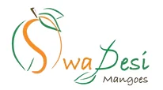
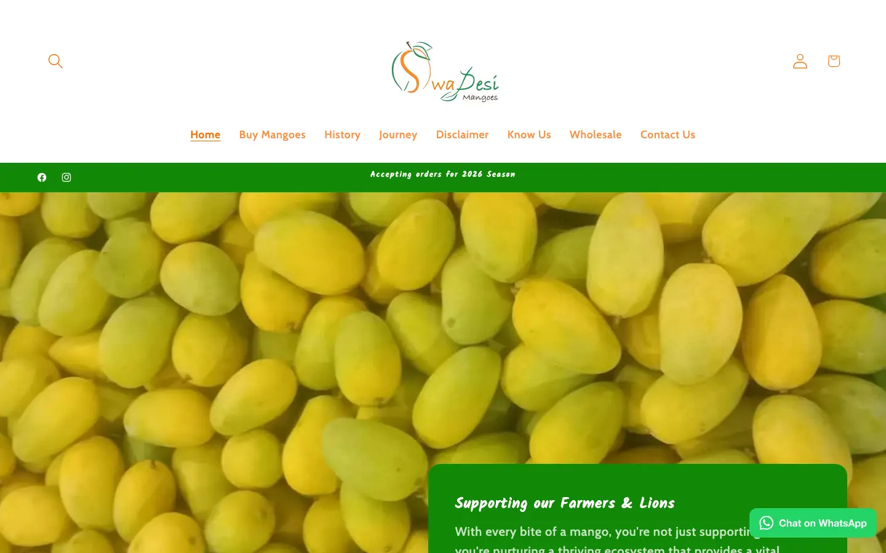

Client storefront
Swadesi Mangoes
A mango shop’s storefront, rebuilt in Next.js with Shopify behind it.
- swadesimangoes.com
- Private repo

By the numbers
- 22 of 24commits are mine
What I did
- Rebuilt the storefront in Next.js, with Shopify behind it.